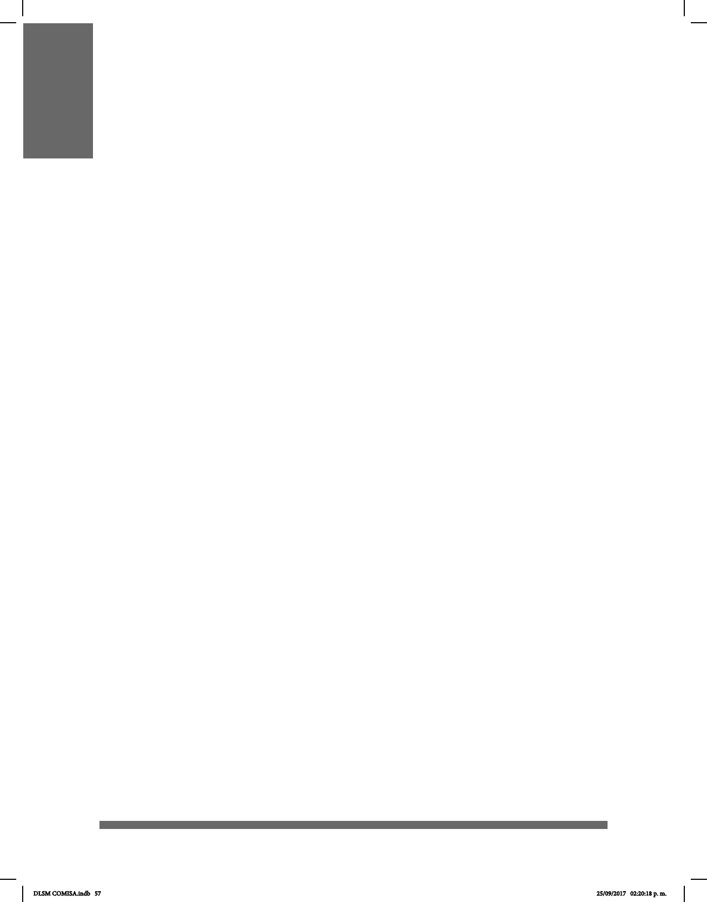

57
CEREBRO Y LSM
El lenguaje es producto de una siología cerebral particular y, al parecer, única
entre las especies animales. Nadie puede hoy negar que los términos cerebro y
lenguaje son un binomio de relación causal y afectación mutua. Sin embargo, al referirnos a
cerebro y lenguaje de señas, los referentes no son los mismos ni tan obvios que cuando
hacemos alusión a la siología cerebral de la lengua oral (LO). El procesamiento en el
cerebro humano de las lenguas de señas (LS) no cuenta aún con la cantidad y cualidad de
investigaciones y artículos de investigación clínica, como los que encontramos
sobre cerebro y lengua oral. No obstante, no es un atrevimiento ni una licencia cientíca
armar que las lenguas signadas son como las orales, producto de una siología
cerebral particular y especíca relacionada con los gestos. Ahora bien, ¿el cerebro
humano procesa las LS con los mismos algoritmos o patrones de conectividad que
conocemos hoy del procesamiento de la LO? ¿Las zonas y circuitos dedicados al
procesamiento de la lengua audio-vocal son los mismos que los destinados a una lengua
cuya aferencia es viso-espacial?
Las lenguas de señas proveen a la neurociencia de las funciones mentales y, en
particular, a la neurociencia del lenguaje, de una oportunidad única de estudiar los
diferentes procesamientos que el cerebro humano lleva a cabo con respecto a la
información auditiva y la información visual.
De acuerdo con lo anterior, surge entonces la pregunta siguiente: ¿los cerebros de las
personas sordas y los de las personas oyentes dieren?
En el siglo XXI los estudios con métodos de resonancia magnética han sido
empleados para no sólo obtener imágenes que muestran la función cerebral, sino
también para realizar mediciones en términos de forma y tamaño de regiones y
estructuras cerebrales tanto en materia gris como en materia blanca. Si bien los
estudios realizados que exploran la respuesta a esta pregunta no son tan numerosos, sí son
concluyentes y la respuesta a este cuestionamiento es negativa, los cerebros de
personas sordas y oyentes no dieren en cuanto a las regiones y estructuras cerebrales
conocidas y esenciales en el procesamiento del lenguaje. No hay indicios de que las
áreas de procesamiento auditivo en personas sordas sean más pequeñas en volumen
o de forma diferente comparadas con personas oyentes. Sin embargo, se ha señalado
que las vías de conexión, la materia blanca entre áreas cerebrales, sí son diferentes
entre estas dos poblaciones, pues son de mayor volumen relativo las conexiones entre
las regiones auditivas y perisilvianas en el hemisferio izquierdo en personas oyentes que
en personas sordas. Aún se requieren de más estudios con las mejoras tecnológicas más
sensibles a la medición para arrojar datos más concluyentes.
Entonces, ¿el procesamiento de la lengua oral y la lengua de señas compromete a las
mismas regiones del cerebro?
DLSM COMISA.indb 57 25/09/2017 02:20:18 p. m.